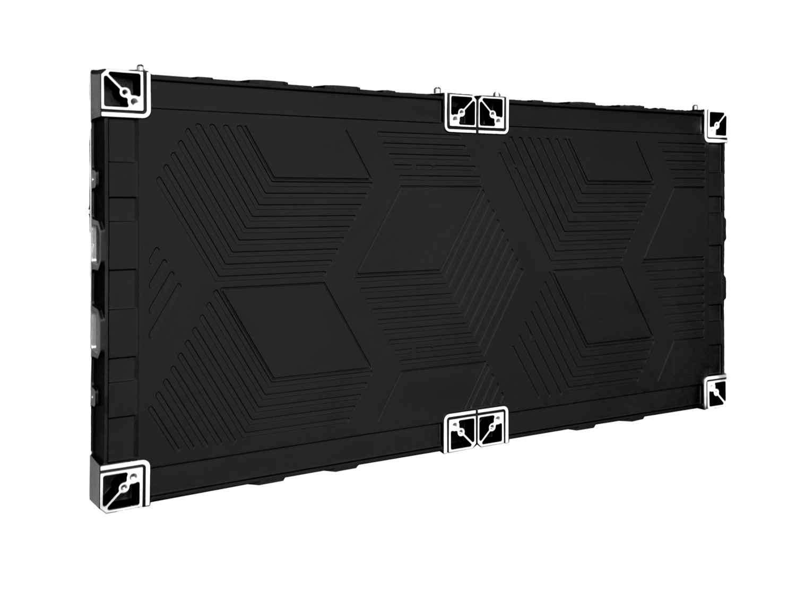
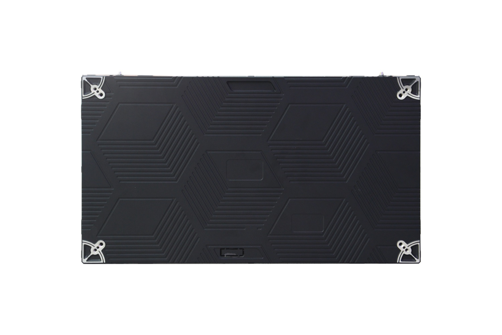

By David
A contract vehicle is the pre-negotiated agreement an integrator buys through — a GSA schedule, a cooperative purchasing contract, a national dealer agreement, or a distributor — rather than buying the dvLED wall directly from the manufacturer each time. Which route applies decides the pricing mechanism, the paperwork, and in government work whether the purchase is permitted at all.
This guide sets out the routes available to a North American AV integrator, what each one changes commercially, and what the manufacturer has to supply for each to work.
The term covers several different arrangements that share one property: the price and terms were agreed before the specific project existed, so the buyer does not negotiate from scratch on every order.
That pre-agreement is what makes them useful. It shortens the procurement cycle, and it shifts the buyer’s effort from negotiating price to confirming that the product meets the project specification.
For a manufacturer, each route changes who the customer is. In some, the integrator buys directly. In others, the transaction runs through a distributor or a schedule holder, and the manufacturer is a supplier to that party rather than to the end user.
Most North American dvLED purchases follow one of five routes. They differ in who holds the contract and what the buyer has to prove.
| Route | Who holds the agreement | Typical use |
|---|---|---|
| Direct from manufacturer | None — negotiated per order | First purchase, custom cabinet sizes, large single projects |
| Through distribution | The distributor | Stock and small orders, faster delivery, standard products |
| Dealer or national account | Integrator’s own agreement | Repeat work with one brand, agreed pricing tiers |
| Government schedule | The integrator, or a schedule holder | Federal and some state purchases |
| Cooperative contract | A public purchasing consortium | Education, municipal and healthcare projects |
Three things move when a contract vehicle is used, and each one is worth understanding before quoting a project.
The price mechanism changes. Direct purchases are quoted per project and can be re-negotiated. Contract purchases follow a published or agreed schedule, which makes the number predictable but less flexible on a single order.
The documentation changes. Schedule and cooperative contracts carry their own submittal expectations, and a project approved under one route may not accept paperwork written for another.
The origin requirement changes. Some government routes attach conditions on where the product is manufactured. That point decides whether a product can be supplied at all under that contract, so it has to be checked before the specification is written rather than after the award.

Where a purchase is made under a government schedule or a federally funded cooperative contract, the origin of the product can be a condition of the award. The requirement is usually expressed as a trade agreement condition: the product must be manufactured in a designated country.
That condition is checked against the manufacturing country, not the brand or the shipping origin, and it is verified from the documentation rather than from a statement. Where the product is manufactured outside the designated countries, it does not satisfy the condition, and the purchase has to be sourced differently or the project has to be structured differently.
The practical consequence for an integrator is that this check belongs at the specification stage. Writing a specification that names a product the contract cannot accept creates a problem late in the process, when the schedule is already committed.
Ask any supplier for the manufacturing country in writing, and for the documentation that supports it, before the product is written into a contract-governed specification.
Whichever route is used, the manufacturer supplies a consistent set of commercial and technical documents. These are the ones worth confirming before the order.
| Document | Used for |
|---|---|
| Cut sheet | Product specification and submittal |
| Certification file | CE, FCC, RoHS, and UL/ETL where applicable |
| Manufacturing country statement | Origin checks on contract-governed purchases |
| Dimensioned drawings | Structural design and submittal |
| Power figures | Electrical design and power schedule |
| Warranty statement | Contract terms and end-user documentation |
| Spare parts list | Service planning and contract close-out |
On a direct purchase, the integrator’s margin is set by the difference between the project price and the factory price. Through a contract route, the margin is often defined by the agreement itself, and the manufacturer’s price becomes a cost line rather than the negotiation.
That makes the factory price predictable but leaves less room to improve it order by order. Where a project needs a different margin, the change usually comes from scope — the specification, the service package, or the installation — rather than from the product price.
For a first project with a new factory, a direct route with a defined submittal package is often simpler, and the relationship can move to a contract route once the volume justifies it.
For this requirement our range covers it directly: the All 12 LED display series the COB CV-PRO series.
Send your specifications for a detailed LED display price quote with UL/ETL certification.
Request Price Quote Chat on WhatsApp